Rondreizen
Met een gids, met je eigen wagen of een mix van beide, altijd in jouw tempo.
Droom je van verre bestemmingen, andere culturen en onvergetelijke ervaringen? Onze rondreizen brengen je naar de mooiste plekken wereldwijd. Van bruisende steden in Amerika tot tempels in Azië en adembenemende natuur in Afrika. Elke bestemming heeft zijn eigen unieke karakter.
Of je nu kiest voor een rondreis vol hoogtepunten, een avontuurlijke ontdekkingstocht of een combinatie van cultuur en ontspanning, wij stellen jouw reis volledig samen op maat. Dankzij onze expertise en wereldwijde partners zorgen we ervoor dat jij zorgeloos kan genieten van een reis die perfect aansluit bij jouw verwachtingen.
Waar en wanneer?
De beste reisperiode verschilt sterk per bestemming. Kies een maand om te zien waar het dan op zijn best is, of klik op een bestemming voor uitleg en praktisch advies.
Noord-Amerika
Zuid-Amerika
Azië
Oceanië
Midden-Oosten
Noord-Afrika
Indicatief, op basis van weer en drukte. Elke bestemming kent regionale verschillen; in een persoonlijk gesprek bekijken we wat voor jouw reis het beste past.
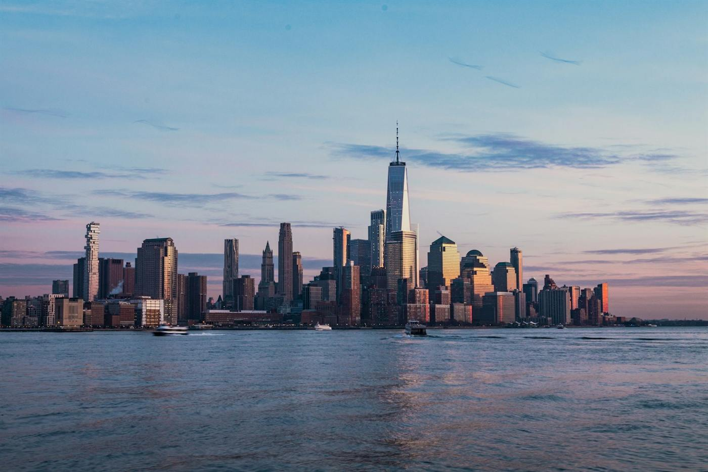
Verenigde Staten
Van de wolkenkrabbers van New York tot de rode rotsen van Utah en de kust van Californië. Voor een rondreis langs de nationale parken zijn de lente en de vroege herfst ideaal: aangename temperaturen en minder drukte dan in juli en augustus.
- Beste periode
- Vliegtijd
- ± 8u tot New York, ± 11–12u tot de westkust
- Tijdsverschil
- −6 tot −9u
- Ideale reisduur
- 2 à 3 weken
Goed om te weten. In de winter zijn Florida en Hawaii een aangenaam alternatief, terwijl sommige bergwegen in de nationale parken dan gesloten zijn.
Plan je reis naar de VS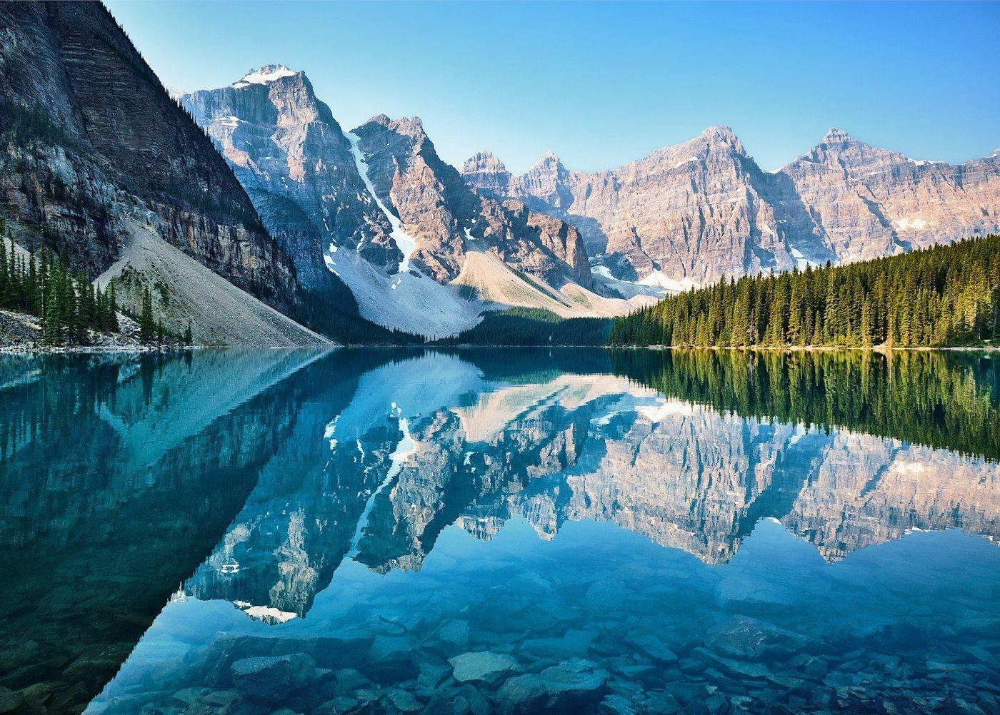
Canada
Turquoise bergmeren, gletsjers en eindeloze bossen in de Rocky Mountains, met Vancouver als groene uitvalsbasis aan de Pacifische kust. Van juni tot september zijn alle wegen en wandelpaden open; eind september kleuren de lariksen goud en is het rustiger.
- Beste periode
- Vliegtijd
- ± 9–10u tot Calgary of Vancouver, met overstap
- Tijdsverschil
- −8 à −9u
- Ideale reisduur
- 2 à 3 weken
Goed om te weten. In juli en augustus zijn de lodges rond Banff en Jasper snel volzet; die boek je best ruim op voorhand.
Plan je reis naar Canada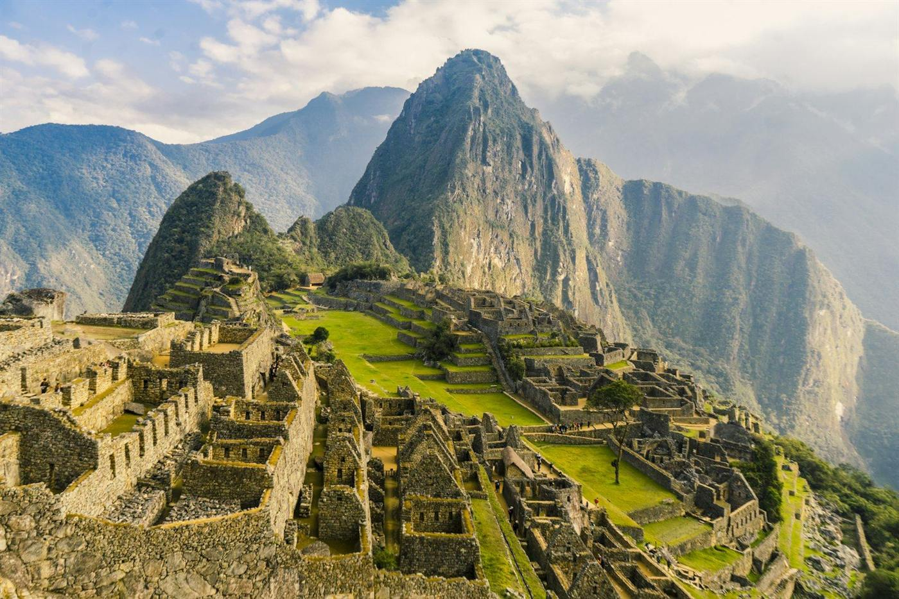
Peru
Machu Picchu, de Heilige Vallei en het Titicacameer: Peru is Inca-geschiedenis tussen besneeuwde Andestoppen. Het droge seizoen van mei tot september geeft de beste omstandigheden in de bergen, met heldere dagen en koude nachten.
- Beste periode
- Vliegtijd
- ± 13–15u, met overstap
- Tijdsverschil
- −6 à −7u
- Ideale reisduur
- 2 à 3 weken
Goed om te weten. De klassieke Inca Trail is in februari gesloten, en de vergunningen voor mei tot augustus zijn vaak maanden vooraf uitverkocht. Cusco ligt op 3.400 meter: we plannen een paar rustige dagen om te acclimatiseren.
Plan je reis naar Peru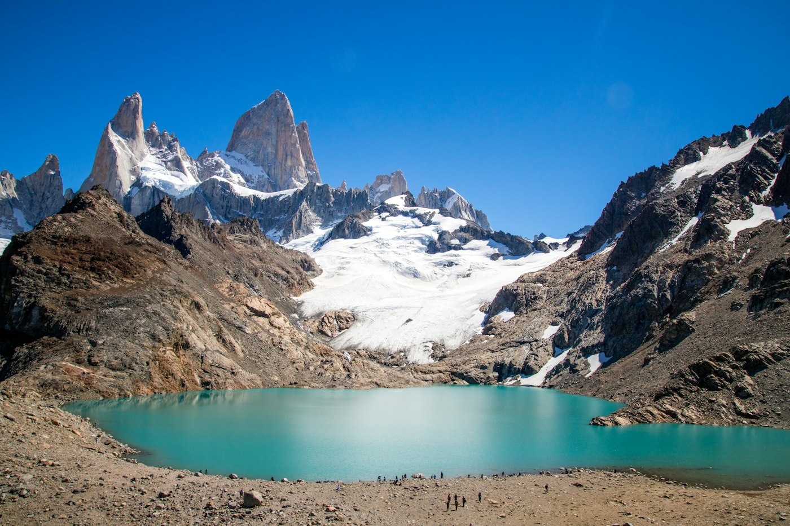
Argentinië & Patagonië
Tango in Buenos Aires, de gletsjers rond El Calafate en de granieten pieken van de Fitz Roy. Patagonië is op zijn best in de zuidelijke zomer, van november tot maart, wanneer de dagen lang zijn en de wandelpaden open.
- Beste periode
- Vliegtijd
- ± 14–16u, met overstap
- Tijdsverschil
- −4 à −5u
- Ideale reisduur
- 3 weken, met binnenlandse vluchten
Goed om te weten. Januari en februari zijn hoogseizoen in Patagonië; estancia’s en gletsjertochten boek je best ruim op voorhand.
Plan je reis naar Argentinië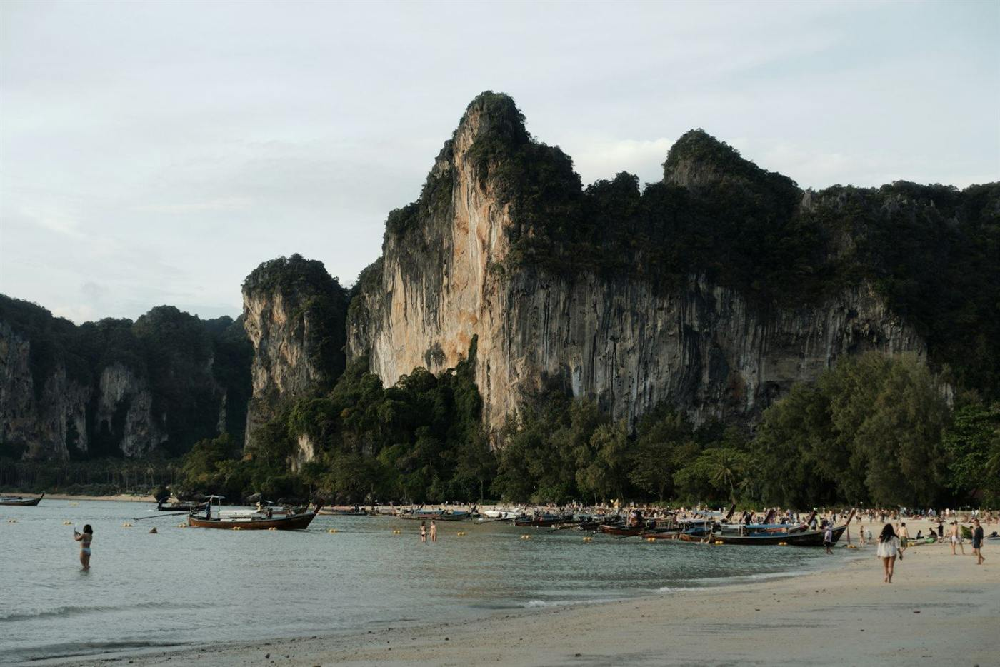
Thailand
Tempels en straatmarkten in Bangkok, de bergen rond Chiang Mai en tot slot een eiland in de Andamanzee. Van november tot februari is het droog en minder heet; daarna wordt het warmer, en vanaf mei begint het regenseizoen.
- Beste periode
- Vliegtijd
- ± 11–13u
- Tijdsverschil
- +5 à +6u
- Ideale reisduur
- 2 à 3 weken
Goed om te weten. De oostkust rond Koh Samui heeft een ander ritme: daar valt de meeste regen van oktober tot december, net wanneer de westkust op zijn best is.
Plan je reis naar Thailand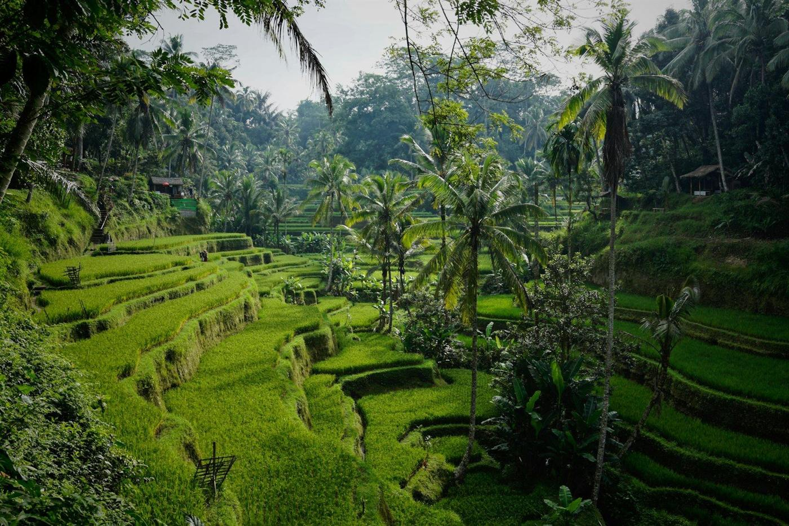
Bali
Rijstterrassen, hindoetempels en een ontspannen eilandritme, eenvoudig te combineren met de rust van de Gili-eilanden of het ruige Flores. Het droge seizoen loopt van april tot oktober.
- Beste periode
- Vliegtijd
- ± 16–19u, met overstap
- Tijdsverschil
- +6 à +7u
- Ideale reisduur
- 2 à 3 weken
Goed om te weten. Juli, augustus en de kerstperiode zijn het drukst. Wie rust zoekt, kiest mei, juni of september.
Plan je reis naar BaliJapan
Eeuwenoude tempels in Kyoto, de neonlichten van Tokio en rust in een ryokan met warmwaterbron. Lente en herfst zijn ideaal: eind maart de kersenbloesem, in november de rode herfstbladeren. De zomer is heet en vochtig, met een regenseizoen in juni.
- Beste periode
- Vliegtijd
- ± 13–15u, met overstap
- Tijdsverschil
- +7 à +8u
- Ideale reisduur
- 2 weken
Goed om te weten. Tijdens de kersenbloesem, eind maart en begin april, is alles snel volzet. Die periode boek je best 9 à 12 maanden vooraf.
Plan je reis naar Japan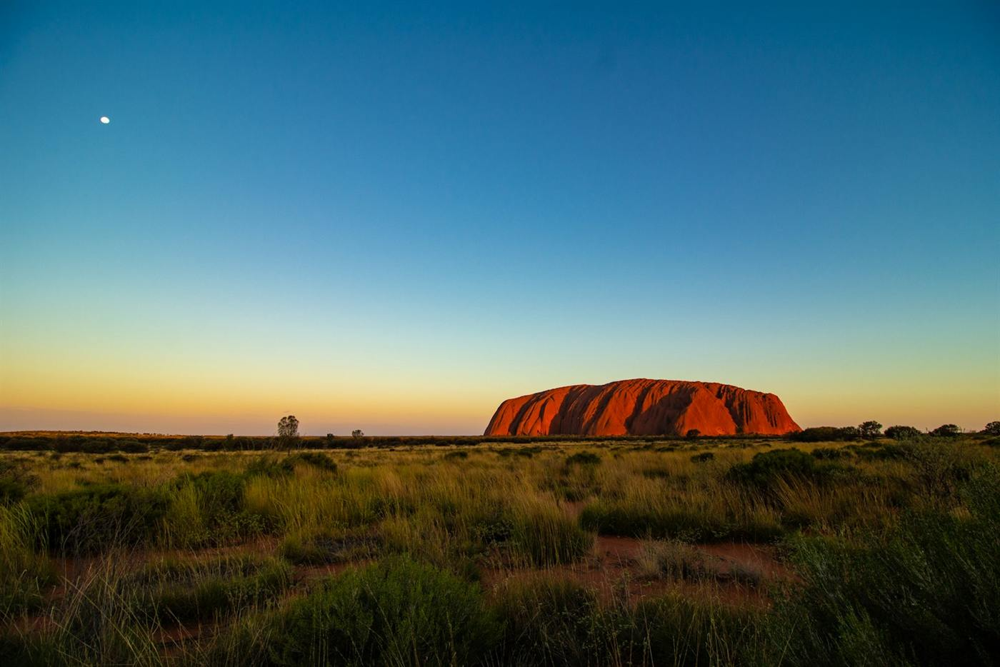
Australië
Van het Great Barrier Reef tot Uluru in het rode hart en de kust rond Sydney: Australië is groot, en elke streek heeft zijn eigen seizoen. Lente en herfst zijn overal aangenaam; als het bij ons winter is, is het er zomer.
- Beste periode
- Vliegtijd
- ± 22–24u, met overstap
- Tijdsverschil
- +8 à +10u
- Ideale reisduur
- 3 à 4 weken
Goed om te weten. Het tropische noorden, rond Cairns en Darwin, is het best van mei tot oktober: dan is het er droog en aangenaam.
Plan je reis naar Australië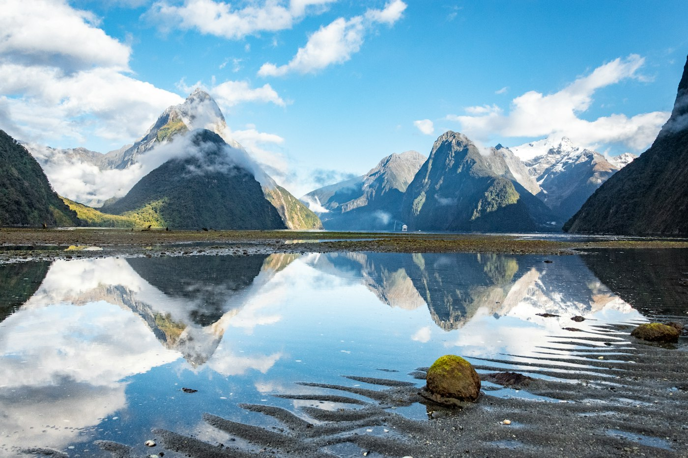
Nieuw-Zeeland
Fjorden, vulkanen, gletsjers en wijnstreken op twee eilanden, ideaal om met een huurwagen te ontdekken. De zuidelijke zomer van december tot maart geeft de langste dagen, en dan zijn de meeste wandelpaden open.
- Beste periode
- Vliegtijd
- ± 25–28u, met 1 à 2 overstappen
- Tijdsverschil
- +10 à +12u
- Ideale reisduur
- 3 weken
Goed om te weten. Door de lange reistijd raden we een tussenstop aan, bijvoorbeeld in Singapore of Dubai.
Plan je reis naar Nieuw-Zeeland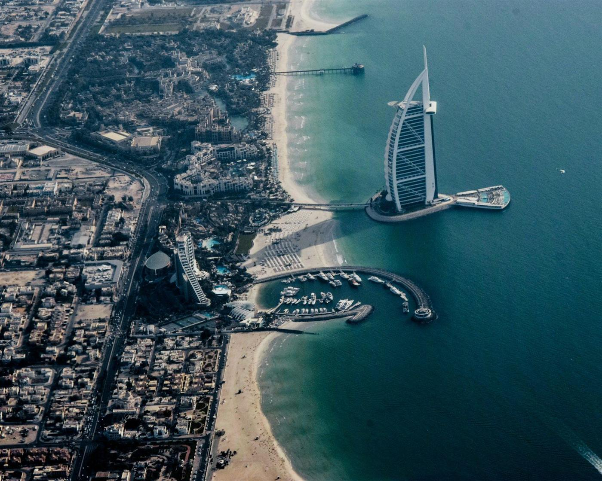
Dubai & Oman
De skyline van Dubai, gecombineerd met de fjorden van Musandam, de woestijn van Wahiba en de oude forten van Oman. Van november tot maart is het er zonnig en aangenaam warm; in de zomer loopt de temperatuur op tot boven de 40 graden.
- Beste periode
- Vliegtijd
- ± 6,5u, rechtstreeks
- Tijdsverschil
- +2 à +3u
- Ideale reisduur
- 8 à 12 dagen
Goed om te weten. Een ideale korte wintervakantie, en ook een goede tussenstop op weg naar Azië of Australië.
Plan je reis naar Dubai & Oman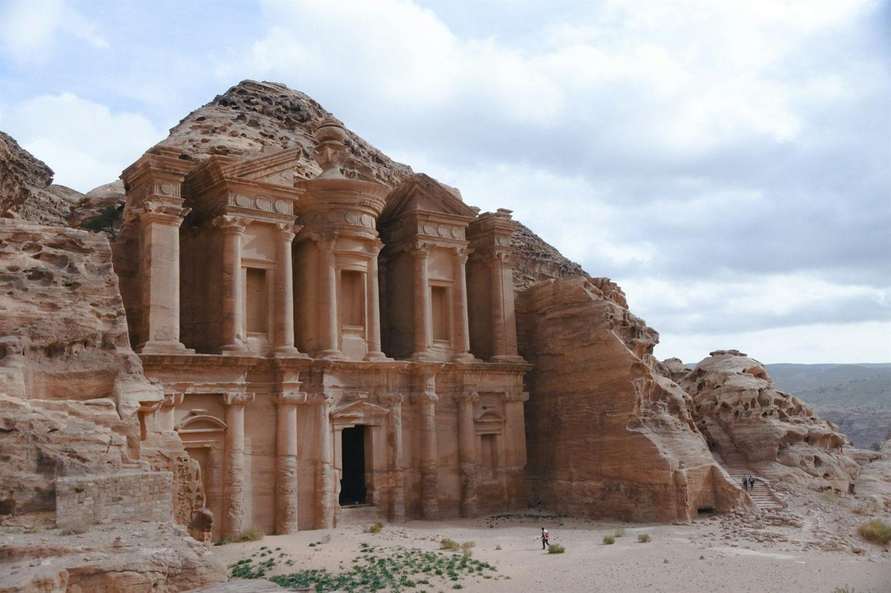
Jordanië
De rozerode rotsstad Petra, een nacht onder de sterren in Wadi Rum en drijven in de Dode Zee. Lente en herfst zijn ideaal om te wandelen; in de zomer is het in de woestijn erg heet, in de winter kan het er fris zijn.
- Beste periode
- Vliegtijd
- ± 4,5u
- Tijdsverschil
- +1 à +2u
- Ideale reisduur
- 8 à 10 dagen
Goed om te weten. Plan minstens twee dagen voor Petra: de site is groot en op zijn mooist vroeg in de ochtend of laat in de namiddag.
Plan je reis naar Jordanië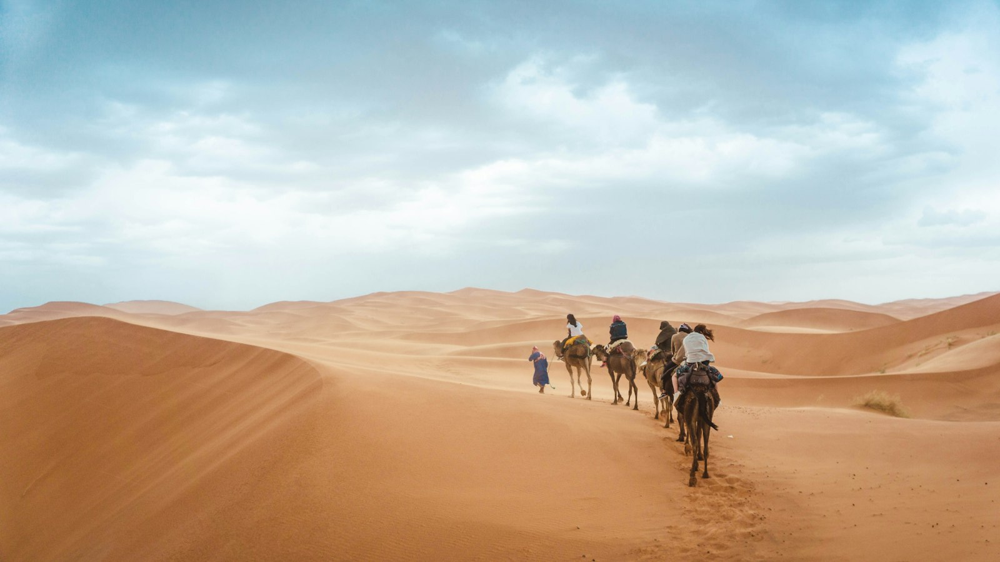
Marokko
De soeks van Marrakech, de kasbahs in het Atlasgebergte en een nacht tussen de duinen van de Sahara. In de lente en de herfst is het aangenaam warm; in de zomer is het binnenland zeer heet, in de winter zijn de woestijnnachten koud.
- Beste periode
- Vliegtijd
- ± 3,5u, rechtstreeks
- Tijdsverschil
- 0 à −1u
- Ideale reisduur
- 1 à 2 weken
Goed om te weten. Tijdens de ramadan blijft reizen goed mogelijk, maar zijn sommige restaurants overdag gesloten.
Plan je reis naar MarokkoHoe wil je reizen?
Elke reis stellen we op maat samen. Het verschil zit in hoeveel er onderweg voor je vastligt: van een gids die alles in goede banen leidt tot een reis die volledig jouw ritme volgt.

Rondreis met gids
Een lokale gids begeleidt je van de eerste tot de laatste dag. Die kent de verhalen en de verborgen plekjes, en regelt onderweg alles. Jij hoeft enkel te genieten, in een kleine groep of met enkel je eigen reisgezelschap.
- Gids
- Mee van begin tot einde
- Vervoer ter plaatse
- Chauffeur of minibus
- Programma
- Vast dagprogramma, vooraf samen afgestemd
- Ideaal voor
- Een eerste verre reis, of landen waar zelf rijden lastig is, zoals Peru of Jordanië

Combinatiereis
Eerst een rondreis vol indrukken, daarna een paar dagen niets aan je hoofd aan het strand. Of een bruisende stad, gevolgd door natuur. Wij zorgen voor een vlotte overgang tussen de verschillende delen.
- Gids
- Tijdens het rondreisdeel
- Vervoer ter plaatse
- Geregeld, ook tussen de onderdelen
- Programma
- Deels vast, deels vrij
- Ideaal voor
- Wie cultuur én rust wil, zoals Thailand met een eiland of Dubai met een strandverblijf

Fly & drive
Je vliegt naar je bestemming en ontdekt de rest met een huurwagen, in je eigen tempo. Wij stippelen de route uit en boeken de hotels onderweg; hoe je je dagen invult, beslis je zelf.
- Gids
- Geen, wel een uitgewerkte route
- Vervoer ter plaatse
- Huurwagen, je rijdt zelf
- Programma
- Route en hotels liggen vast, de dagen zijn vrij
- Ideaal voor
- Wie graag zelf ontdekt, in landen als de Verenigde Staten, Canada of Nieuw-Zeeland

Volledig op maat
Geen vast format: we bouwen de reis helemaal rond jouw wensen. Een paar dagen met een gids, een stuk zelf rijden, een bijzondere lodge of een binnenlandse vlucht: alles kan, in het tempo dat bij jou past.
- Gids
- Waar jij het wil
- Vervoer ter plaatse
- Een mix, naar keuze
- Programma
- Volledig rond jou opgebouwd
- Ideaal voor
- Ervaren reizigers en wie bijzondere wensen heeft
Past bij elke reisvorm: een stedentrip van enkele dagen, of een actieve reis vol wandelen, fietsen of kajakken.
Zo kan jouw reis eruitzien
Enkele voorbeelden van reizen die we eerder op maat samenstelden. Telkens een vertrekpunt, geen vast pakket. We stemmen alles af op jouw wensen.


Vertel me over je volgende reis tijdens een vrijblijvend gesprek.
015 23 47 23
- Ma–Vr
- 10u – 18u30, uitgezonderd wo
- Wo
- na afspraak
- Za
- 10u – 12u30, na afspraak